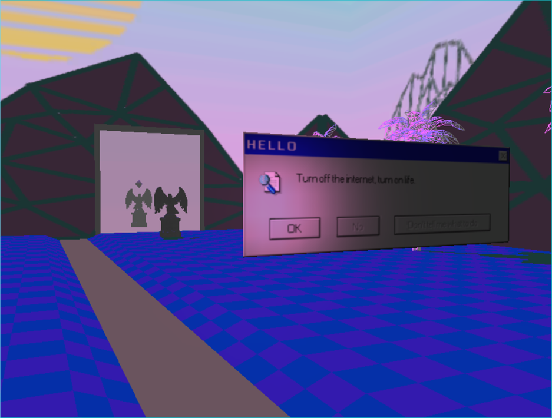
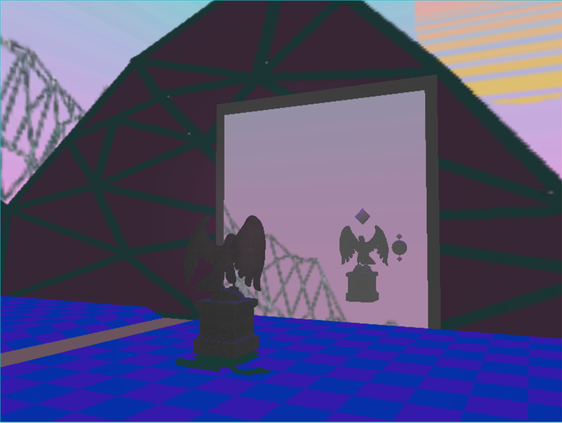
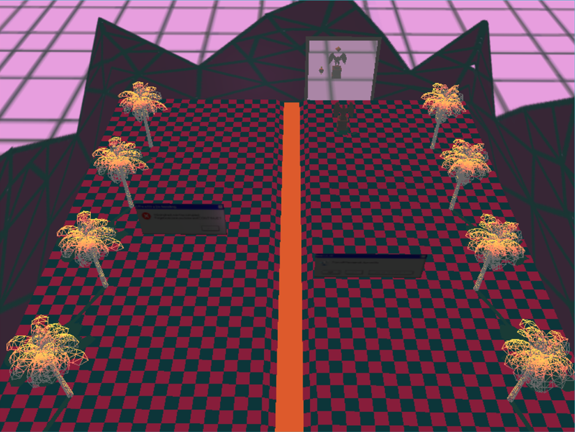
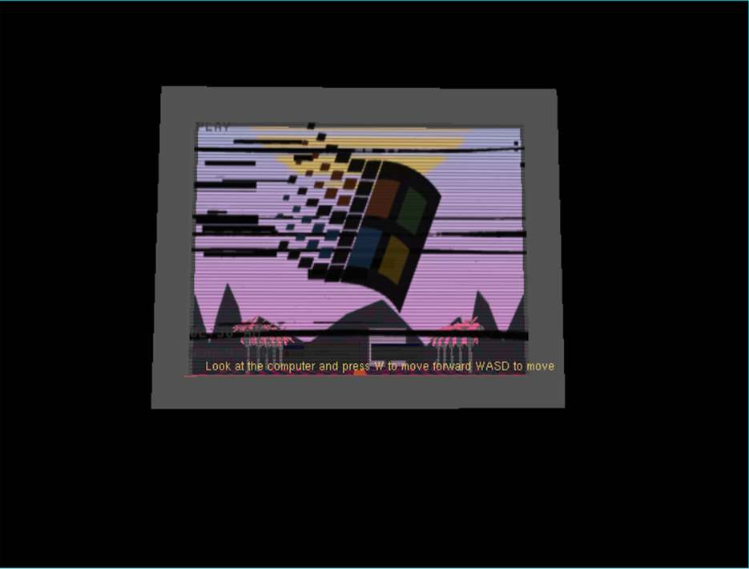

OpenGL
One of the second year modules at university was graphics rendering where I got to learn about different rendering techniques like hierarchical modelling, matrix transformations and manipulation, lighting, shadows, stencil buffer and creating a skybox.
This is the project I had to create for one of my 2nd year modules while at Abertay University. The module was an introduction into graphics pogramming and the application was made using OpenGl and demonstrates some simple graphics rendering techniques. The scene makes use of several lighting methods, stencil buffers for the start and the reflection, shadows, loaded models, texturing, different filtering techniques, procedural mesh generation and different cameras with different controls.



